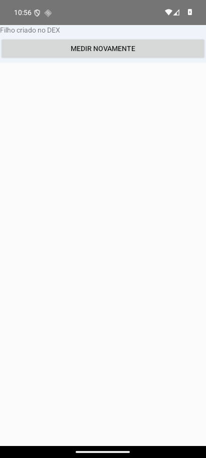
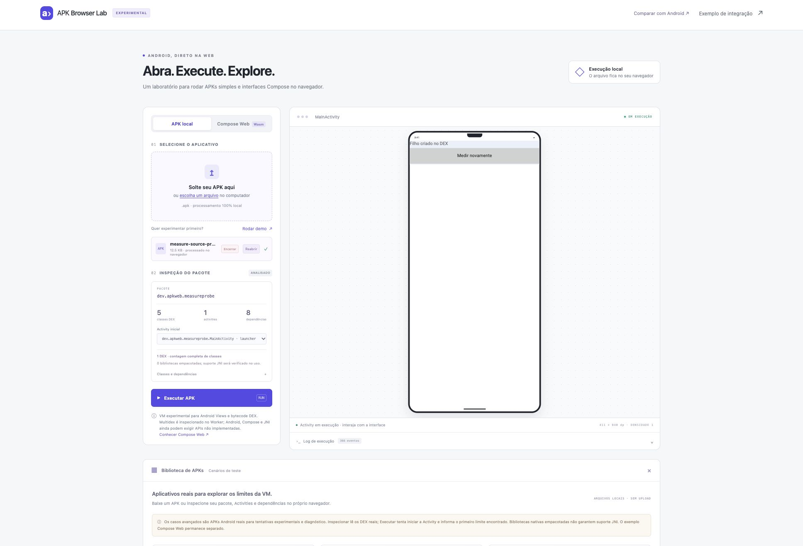
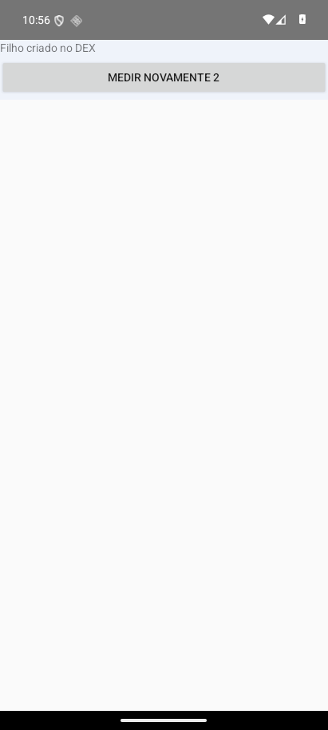
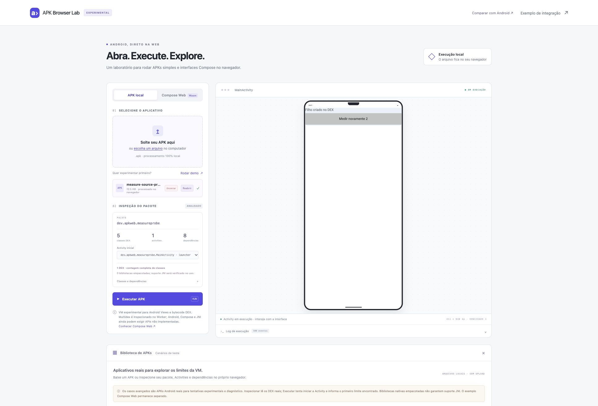

O APK calcula as mesmas medidas.
O ViewGroup do aplicativo cria os filhos, executa onMeasure/onLayout e solicita uma nova passagem após cada clique. No navegador, MeasureSpec e os cálculos de tamanho rodam em DEX original; Skia fornece as métricas da fonte.
1. Primeiro layout




2. Após dois cliques




Geometria conferida nas duas execuções
| View | Android | Navegador | Resultado |
|---|---|---|---|
| ViewGroup | 411 × 75 | 411 × 75 | Coincide |
| TextView | 411 × 19 · y 0 | 411 × 19 · y 0 | Coincide |
| Button | 411 × 48 · y 23 | 411 × 48 · y 23 | Coincide |
44 verificações Android e 6 comparações geométricas passaram. A conferência web usa os retângulos reais do DOM, descontando a escala visual da prévia; tolerância de 0.002 px lógicos. Texto “Medir novamente 2” observado após dois cliques reais no navegador.
Capturas reais, enquadradas por CSS. As medidas coincidem neste cenário; a aparência dos widgets ainda difere. O Android executa uma medição adicional durante a abertura. A densidade do emulador foi temporariamente alinhada à VM e restaurada depois do teste. O emulador serve apenas ao QA; o usuário executa o APK inteiramente no navegador.
Comparação das medidas · Relatório Android · Hashes e ambiente